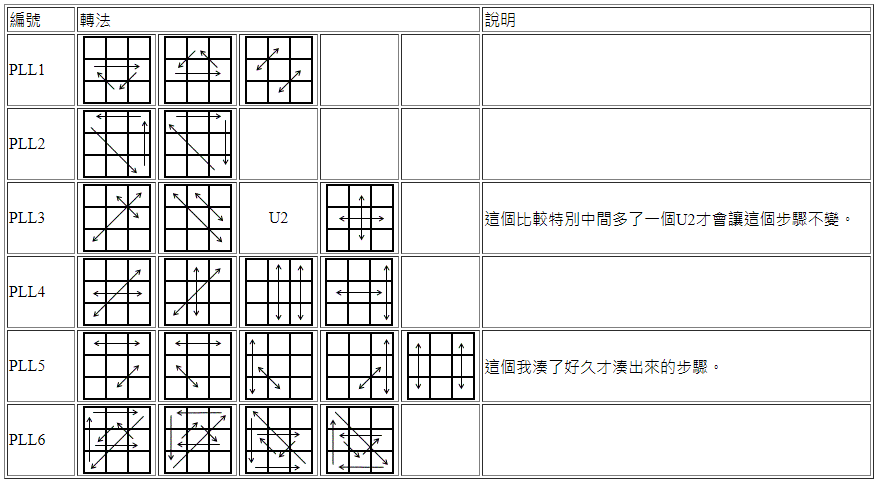

※本頁使用Ulf視角
六格觀察法定義
條
田
眼
Pair
剩邊型
Ua-perm: 2眼
Ub-perm: 2眼
H-perm: 2眼
Z-perm: 2眼
剩角型
Aa-perm: 1田1眼
Ab-perm: 1田1眼
E-perm: 0
2 Pairs 互換型
Ja-perm: 1條1Pair
Jb-perm: 1條1Pair
Na-perm: 2Pair呈對色
Nb-perm: 2Pair呈對色
鄰角對邊型
T-perm:
1眼中心呈對色與1Pair相接
F-perm: 1條
對角鄰邊型
V-perm: 1田
Y-perm: 2Pair
鄰角鄰邊型
Ra-perm: 眼與下Pair相接
Rb-perm: 眼與上Pair相接
雙環型
Ga-perm: 眼+下Pair
Gb-perm: 眼+右上Pair
Gc-perm: 眼+上Pair
Gd-perm: 眼+右下Pair
將21種PLL的轉法一口氣轉完，可以拿來作練習，如下：
